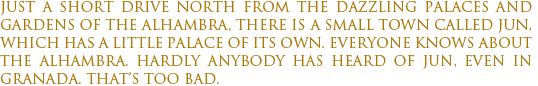
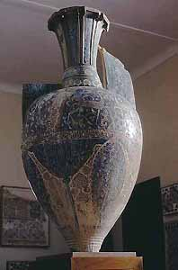
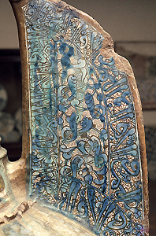
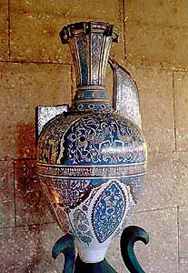
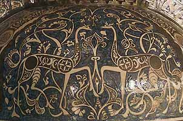
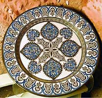
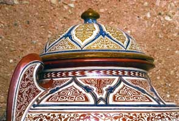
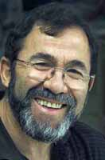

Reprinted with kind permission of Saudi
Aramco World and the author.


Jun’s
palace is called Pabellón de las Artes. And what is
the connection?
We’ll have
to enter Jun’s Pavilion of the Arts to find out.
A massive iron door
slides open easily, and we enter a bright, spacious museum that,
in the distance, curves to the left, leaving the last part out
of sight.
Lining the walls
and filling the floor-space are more than a hundred ceramic
vases, jars, jugs, plates, oil lamps and chests, from the gigantic
to the diminutive. Gracefully shaped, colored and gilded, decorated
with intricate geometric, floral and calligraphic designs, all
are in the 14th and 15th-century style of the Nasrid period
when the Alhambra was built: the last 200 years of Muslim rule,
when the arts in southern Spain flourished as never before.
Anyone with an interest
in Andalusian history entering here would rub his eyes in disbelief
and delight. Nearly all these ceramic pieces are lusterware,
made by a complicated process that was gradually lost from this
land after 1492, when the Muslims were finally expelled from
Spain following the Christian conquest of the Kingdom of Granada.
|
|
Ceramics
with this transparent, metallic overglaze are called
loza dorada (“golden pottery”)
in Spanish, though, strictly speaking, the pieces may
be any of several tints—both silver and gold tinged
with green are common. The earliest lusterware was created
at the beginning of the ninth century in Basra and Chuff,
in what is now Iraq. Soon afterward, the artisans of
Samarra, 125 kilometers (75 mi) north of Baghdad on
the Tigris River, started to create large quantities
to supply the courts of the Abbasid Caliphate, from
India in the east to Al-Andalus —Muslim-ruled
southern Spain—in the west. The technique also
soon flourished in Egypt. From there, some two centuries
later, artisans of Al-Andalus learned enough to start
their own production, reaching their apogee of beauty
and sophistication in the period of the Alhambra.
At first, lusters were
made by applying pure metals like gold, silver, platinum,
tin and copper—each for its distinctive color—to
fired and wholly or partially glazed clay (“bisque”),
which was then refired at a lower temperature. The resulting
combination of glaze base and metallic sheen enhanced
the lines and colors of the decoration. Later, the technique
was refined by using metal oxides, which were also applied
on top of the glaze base with a fine brush. (In a different,
far less expensive process, pigment-based lusters, developed
in the 19th century, often characterize commercial ceramics
and porcelains up to the present day.)
Jiménez explains his
Alhambran luster technique in his typically exuberant
fashion, which itself may be a legacy from the Moorish
past. “I’m in a constant dialogue with all
the elements of the cosmos: oxygen, earth, water, fire
and time…. The process consists in converting
metal into oxide and then oxide back into metal. Metal
plus oxygen produces oxide. So if we now remove the
oxygen from the oxide we added previously, we again
get metal—a luster. The Arabs had this down to
a fine art.”
Complex lusters, he
says, may require firing more than once—and some
as many as six times. |
Very few examples of the old
lusterware have survived the last five centuries. One of the
most famous is the enormous, amphora-shaped “Alhambra
Vase” (also known as the “Vase of the Gazelles”),
and a replica of it is a centerpiece in this Pavilion. Were
I to make a guess as to how long it would have taken an artisan
of Al-Andalus to produce it and all the rest of these riches,
I would suggest a couple of lifetimes.
Wrong! They have all been produced
by one man, and he is alive and well, and full of energy and
ideas. Miguel Ruíz Jiménez is a short, bearded, powerfully-built
man in his mid-50’s. Said his wife, Ana, “He did
it all himself, with his own hands. And he built the Pavilion
as well. That alone took him 15 years!”
And
he’s filled his Pavilion only not with his art, but also
a huge studio, an auditorium and research facilities. A stone’s
throw away, he runs a small factory that employs 24 people to
produce the kind of decorative Andalusian pottery found in local
shops. It is a separate world from his Nasrid-style lusterware,
whose prices range all the way from € 100 to € 60,000
($120–$72,000).
I thought a local Granada newspaper
had exaggerated wildly when it described Jiménez as “a
sketcher, welder, potter, wood carver, chemist, blacksmith,
painter, writer, architect, sculptor and artist.”
Jiménez likes to refer to what
he does as “alchemy.” In a way, this makes sense,
for the origin of the word is the Arabic al-kimiya’,
which connotes transmutation. This is particularly apt for the
lusterware, whose often golden color is achieved through a complicated,
even arcane process.
He has followed the authentic
Arab tradition in the making of Alhambran glazed pottery,”
says Ana Carreño, editor of El Legado Andalusí, a cultural
magazine based in Granada. His research is “serious and
accurate,” she says, “and his determination and
effort over 25 years has led to recognition here in Spain and
in the Gulf Arab countries through exhibitions, television programs
and workshops.”
Son of a simple granadino
potter, Jiménez got clay on his hands as soon as he could crawl.
By seven he was throwing pottery. What set his artistic passions
afire more than 30 years ago was the discovery of the sensual
loveliness of the old Andalusian art. “When I contemplated
the vases of the Alhambra, I decided that I wanted to do this,
and I started to research and study,” he says. The path
he took was very different from that of his father.
The task was gigantic: Jiménez
studied chemistry, and he visited Nasrid masterpieces worldwide.
There are, he says, no original, firsthand written sources.
From Nasrid times, only the bare names of a few ceramists have
been found—Suleiman Alfaqui, Sancho Almurci, Hadmet Albane,
Felipe Frances, Abdul Aziz, Abel Allah Alfogey. Of their techniques,
there is nothing.
In 1990, Jiménez published the
story of his research and struggle to recreate, experiment by
experiment, the period’s ceramics in a self-published
book titled The Epic of Clay. Here, his mystical streak
comes out in prose as florid as his Nasrid arabesques: “Formulae
and excessive pretension of technical precision are at times
superfluous,” he writes, “for meeting the complex
challenge of combining substance and space in pursuit of an
intuitive art and dreamed shapes when confronted by a series
of subtle factors, as unforeseeable, as variable, as those that
determine the tonality, texture, coloring, and metallic intensity
of the tones and, more specifically, what is going to be the
singular identity of the masterpiece.”
A little further on he writes
of the duende, the spirit or soul, required to make
lusterware. “We must feel intensely and with the greatest
profundity those indefinite factors that, although they take
us to a foreseen outcome, oscillate during the whole process
in a wide abyss of contingency.”
To recreate the Nasrid masterpiece
style, he found clays and minerals both locally and as far afield
as China, South Africa, England and France. Over four decades
he studied the materials, built Arab-style kilns and fired them
to reach temperatures up to 1040 degrees Centigrade (1904°F).
(Examples of Arab-type kilns can still be found in ceramics
centers such as Paterna and Manises.) For as long as anyone
knows, the potters of this region have used “mountain
wood”—thyme, rosemary and gorse—to achieve
high temperatures and just the right kind of smoke. Jiménez
used the same, varying his materials, varying his temperatures,
shifting the placements of objects inside the kiln.

He also taught himself to draw
the intricate calligraphy, “profuse and complex symmetry
of plant motifs, geometric stylizations, chain patterns, borders
and trimmings, stars, polygons” and more, all replicating
or inspired by Nasrid originals. One large vase, he explains,
has a surface area of two or three square meters (40 to 60 sq
ft) densely covered with designs that have to settle on the
curvilinear, irregular and multifaceted surfaces. Sketch after
sketch, drawing after drawing, rejection after rejection, it
may require as many as 300 or 400 drawings “with the corresponding
days and days of laborious work and continuous meditation.”
Then,
for a masterpiece like the Alhambra Vase, which weighs about
100 kilograms (220 lb) and stands 1.5 meters high(4' 10"), the
throwing is itself a process no less mind-boggling that may
take Jiménez as long asa month. During this time, the upper
part must never be allowed to dry out, lest it become impossible
to join with the other parts, while the lower parts must gradually
dry in order to support the weight of the top parts.
“You humanize the piece
with your hands,” Jiménez says. “You mark on the
vase your impressions of humanity and sentiment, mastery and
culture.” It was this attitude, he believes, that enabled
him to match the master craftsmen of Al-Andalus.
The more I looked into how Jiménez
works, the more I saw a spiritual dimension in his art. The
relationship between him and clay and fire, though based on
years of observation and science, incorporates at least as much
feeling and intuition, of the kind that comes from a master’s
understanding of each step along a complex path.
These days, Jiménez’s
meditations are broken most often by his cell phone, which interrupts
him with questions from customers, family, friends and foremen
in the factory. Watching him made me wonder where Michelangelo
would have got to had he possessed a cell phone.
In order to focus Jiménez’s
attention for a talk, we went to lunch—phone off—in
a popular village restaurant.
I
asked whether his large amphora-style vases were indeed exact
copies of known originals or his own designs. He explained that
it was a combination: “You have to assimilate the [known]
pieces, interpret them and then reconstitute, adding some of
yourself. It is like the construction of a building. There is
some cement, the basic knowledge. So you use the elements you
control to add something more. My approach is that if there
are elements I don’t know, I search for them,I learn them—or
I invent them.”
The initial firing of the pieces,
he explains, is one of the most difficult stages. His favorite
kiln for the big pieces is still the Arab, wood-burning kiln.
“In order to manage the atmosphere in the kiln,”
he says, “you have to know how the air functions and moves
in there, parameters, proportions, height, placement, and how
things work between the combustion chamber and the firing section.
When you fill the kiln, you have to place the pieces exactly
according to how you want them done, at the speed you want,
controlling with an opening below. To achieve an atmosphere
for firing properly, air should circulate with a minimum of
oxygen.”
And the smoke plays an important
part, too. “Smoke—I cannot explain it. You have
to know the interior of the kiln. You have to dream with it,
think about it burning. Then see how the piece turns out and
compare it with the previous piece. To get there in the end
is an interminable chain of study, trial, error and trial.”
Although
by now we know the answer to my question, I ask it anyway: “Could
you achieve an exact replica?”
Jiménez replies: “My question
to you is: What would that culture have been doing had it not
been for the horrible interruption 500 years ago, those horrible
wars? I could become a simple messenger from that time, or I
could continue to advance that richness, sensitivity and culture,
that discipline.”
What Jiménez achieved, as I
saw, were near replicas of great fidelity to the originals,
and occasional improvements. Many are his own designs. “I
copy, research, create an essence, and then at times I add something
from our time, but with all respect toward what those people
did 500years ago.”
Lunch is about finished. Jiménez
switches on his phone.It rings instantly. He answers, hangs
up, and it rings again. With an impatient expression, he switches
it off. “I’m going to get rid of this thing, and
my factory, and all the things that occupy too much of my time.
I want peace and quiet, time to create. That’s what I
was born to do. I need time to express what I have to express.”
As a final word, Jiménez says, “I hope others lean on
what I have humbly done and move ahead.”
|
Tor
Eigeland (www.toreigeland.com)
has contributed writing and photography to Saudi Aramco
World for more than 30 years. He lives near Toulouse,
France.
|
Contact:
Pabellón de las Artes
Cruce de Jun-Alfacar
18213 Jun-Granada, Spain
Tel: +34 958 414 077
Fax: +34 958 414 112
Email: comercial@miguelruizJimenez.com
www.miguelruizJimenez.com
www.abacoarte.com
This article
appeared on pages 2-9 of the January/February 2006 print edition
of Saudi Aramco World.
© Saudi
Aramco World
{kind=link}
{kind=link}
{kind=link}
{kind=link}
{kind=link}
{kind=link}